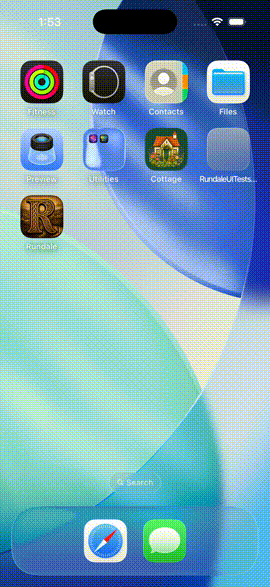

A spoken line reaches the people present
iPhone 17 Pro simulator (not a physical iPhone), live against the limerick-prod Endpoints. One paced run of
RundaleLiveEndpointUITests/test08LiveASpokenLineReachesThePeoplePresent.

- Peig alone on the village road: "Good morning to you" (no name) goes to her, and "Mícheál, are you about?"
(Mícheál is at home) goes to her too. No system line says he is not here.
- At Connolly Cottage with both Connollys present: "Hello" asks "Who are you speaking to?"; choosing Róisín
sends the line to her.
- Still with two present: "ask Peig about the road" (Peig is elsewhere) asks nothing, and both Connollys answer.